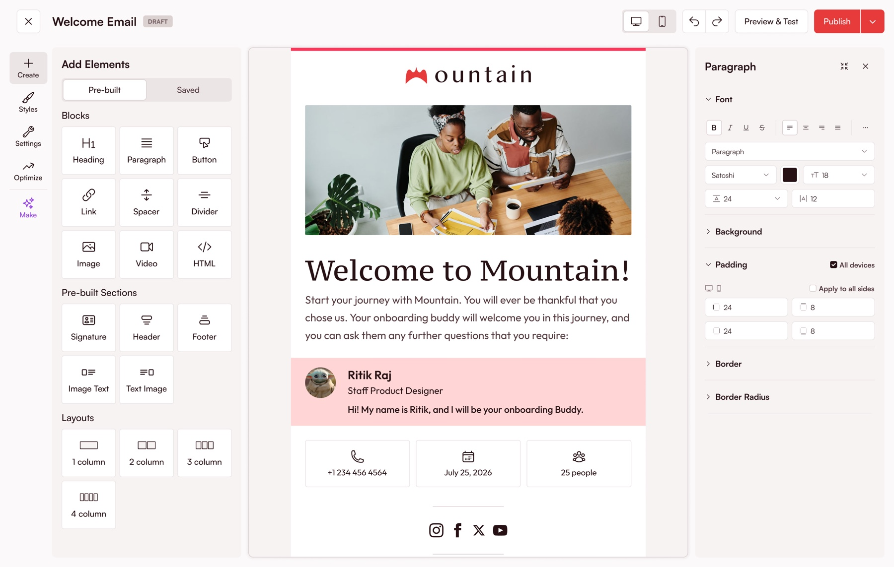
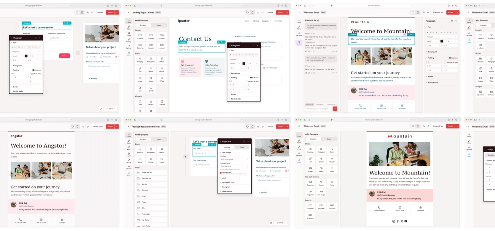
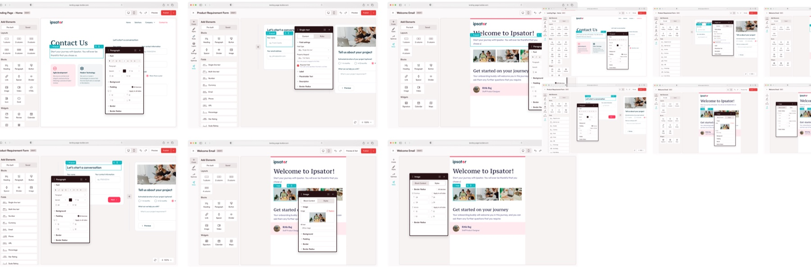

flagship · 0 → 1
the email customization problem
fello’s customers could send email. they could not make it look like theirs. i spent twelve months listening before i drew a single screen.
the problem
fello sold marketing to real estate brokerages. the email going out of it carried fello’s shape, not the brokerage’s. every account said the same thing in a different accent: this does not look like us.
that reads like a template problem. buy more templates, ship more templates, move on. it was not a template problem, and the fastest way to prove that was to stop guessing and go count.
how i found it
i did not run a survey. the company was already drowning in evidence it had never read in one place: support tickets, sales call notes, churn interviews, product usage. over twelve months i pulled 530+ signals out of those and sorted them until they stopped being complaints and started being structure.
four themes came out of it. only one of them was about templates. that is the whole case study in one sentence, and it took a year of listening to earn it.
the brief was a better email builder. the evidence said something else.
what i built
the builder came out of the builder framework rather than getting bolted on beside it. same canvas grammar, same slot model, same state rules as every other builder in the suite. what a user learned in one place still worked here.
that decision is why ten weeks was possible. i was not designing a product, i was instantiating one.



how it landed
i tracked it at step level in mixpanel rather than at the top line. step retention held between 79% and 85% through the flow, with one visible cliff. completion came in at 29% for automated sends and 19% for one-time sends.
beta numbers are labelled beta numbers here, because that is what they are.
what did not work
the gap between 85% step retention and 29% completion is the interesting part, and the aggregate number hides the fact that it is two different failures wearing the same face.
one is a ux failure inside the builder. a person opened it, started, and could not finish. that is mine, and design fixes it.
one is an activation failure outside it. a person never had a reason to be in there in the first place. that is not a builder problem and no amount of interface work moves it. it is lifecycle, onboarding and sales motion.
they look identical in a funnel chart. they need opposite fixes. separating them is the most useful thing i did after launch.
what is left
the activation half is still open. the builder half has a known cliff with a queue of work behind it. neither of those is a reason to round the story up.
the best design work is not finished. it is honest about what is left.